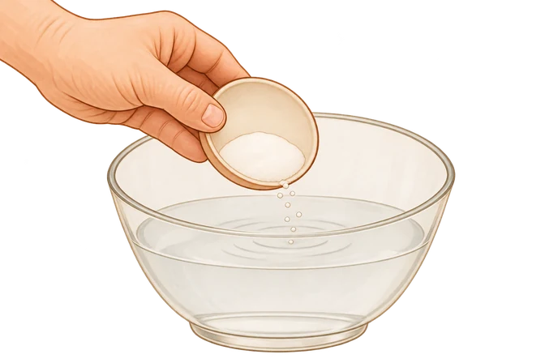
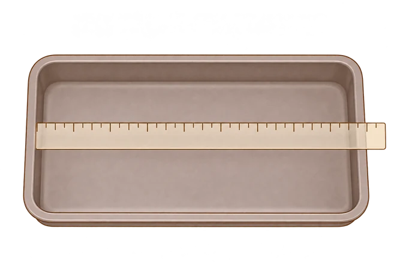
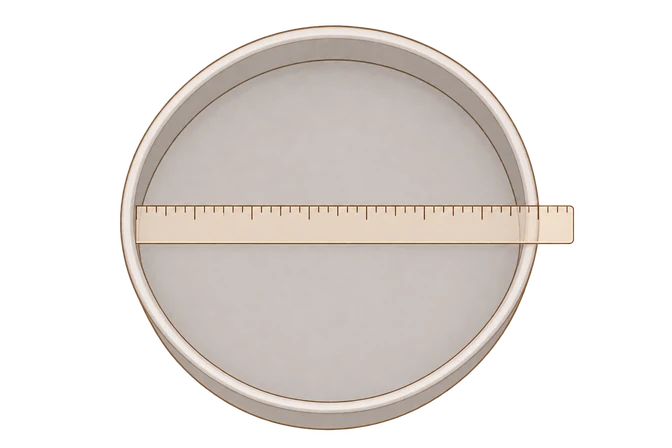

01 · Metodo e fonti · Il sale nella Napoletana STG
Il sale nell’acqua, prima della farina

Nel procedimento della Napoletana STG il sale si scioglie nell’acqua prima di aggiungere la farina. La scena mostra l’aggiunta del sale, senza indicare una dose.02 · Metodo e fonti / Glossario · Thickness factor
Misurare una teglia rettangolare

Per la teglia rettangolare servono le due misure interne: lato lungo e lato corto, senza includere il bordo esterno. Qui è mostrata la misura del lato lungo.03 · Metodo e fonti / Glossario · Thickness factor
Misurare il diametro interno

Per una teglia tonda misura il diametro interno passando per il centro. Il bordo esterno non fa parte della superficie utile; la riga non mostra un valore da copiare.